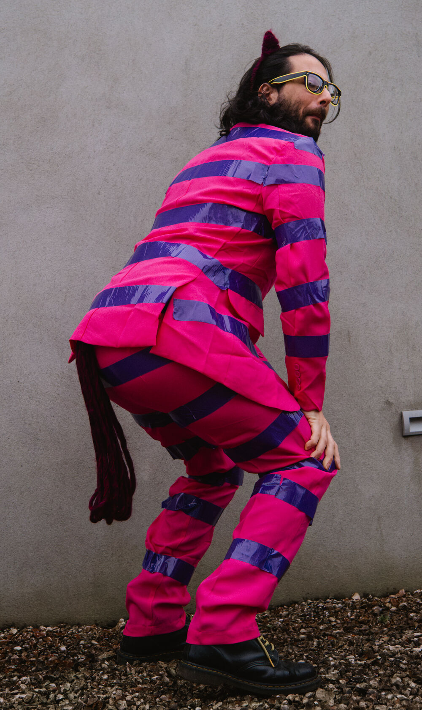

Dario
@lownpho · online now · 1 post

🔒 This post is for subscribers only.
€0.00 / month
- Dignity: billed separately
There it is. Was it worth it? Look into those eyes and think about what brought you here.
♡ 1 like
💬 0 comments